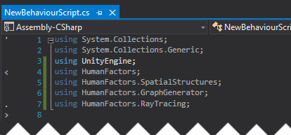

Previous Tutorial: H:/HFGitlab/Analysis/docs/C# Documentation/markdown/2_raycast_at_plane.md "Using the Raytracer" | Next Tutorial: H:/HFGitlab/Analysis/docs/C# Documentation/markdown/4_reading_mesh_from_unity.md "Passing a Mesh From Unity to HumanFactors"
Intro
This tutorial picks up from where H:/HFGitlab/Analysis/docs/C# Documentation/markdown/1_unity_project_setup.md "Tutorial 1: Unity Project Setup" ended. If you are just beginning here, then you can download the Unity project from the bottom of tutorial 1.
In this tutorial we will cover the following:
1) Calling the GraphGenerator with a bvh, spacing, and a start point. 2) Reading nodes from a graph after it has been generated. 3) Handling cases where the GraphGenerator could not generate a graph.
Conceptual Overview
To put it simply, the Graph Generator maps out "accessible" space on a model from a given starting point. As the name implies, this map of the space is stored as a series of nodes and edges in a Graph. Each node represents a point in space that a human can occupy, and each edge between nodes indicates that a human can traverse from one node to another node. The Graph Generator is a powerful tool for analyzing space, since the graph or nodes it outputs can be used as input to all of the analysis methods offered by HumanFactors. This allows the user to go straight from modifying a model or scene, to analyzing it with minimal effort.
Simple Graph Generation
For now, we will begin with the minimum required settings to run the Graph Generator then work our way up to examples that make use of the optional settings. To generate a graph at minimum, the following arguments are requried:
1) A BVH containing the mesh you want to use for graph generation. 2) A point to start graph generation at. 3) The spacing between nodes.
To get started, we will once again set up our using declarations to import the functionality we need.

Creating the Plane
Internally, the graph uses the EmbreeRayTracer which requires a BVH, so we can follow the process as the H:/HFGitlab/Analysis/docs/C# Documentation/markdown/2_raycast_at_plane.md "previous tutorial" to create a plane, then generate a BVH from it.
In the start function add the following code in the body of the Start function on line 13:

Generating the Graph
Now that we have a BVH, let's generate a graph on it. In the code below, we define a starting point for the graph, then we define the spacing between each node.
We'll place our start point 1 meter above the origin of the scene (0,0,1). Starting directly at the origin, (0,0,0), would put the start point inside of the plane we're using for the ground, causing the initial ground check to fail.
We'll use a spacing of one meter in each direction, so each node in our graph will be at maximum one meter apart.
Finally we will call the GraphGenerator with these arguments.

Retrieving A list of nodes
G now contains a graph of the accessible space on Plane using our settings. For this tutorial we will get a list of all nodes within the graph, and print them to get an idea of where this graph traversed.

Save and Test
Here is the full script we've created from this demo. Make sure yours matches it before moving on to testing.
Save your script, minimize Visual Studio, then switch back to the Unity Editor. The process for testing this script is identical to the process in the previous tutorial. Attach the script to the main camera, then press the play button and inspect your output.

Like in the previous tutorial, the output is at the bottom of the screen but it's cut off. To get a better view, click on the output to switch over to the console tab, then click on the message containing our output highlighted in blue for a closer look.

The highlighted text should read:

Now, if the graph fails to generate, Unity will print our nice error message and stop executing the script instead of later throwing a null reference exception when we try to interact with it.
Conclusion
Here is a link the the full project created in this guide: Full Project
In the next tutorial, Reading Meshes From Unity, we will use geometry from the unity scene to generate a graph, instead of generating our own plane.